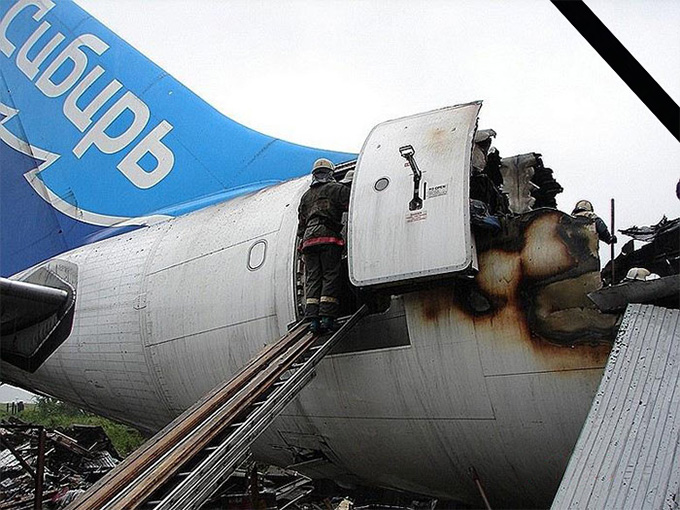
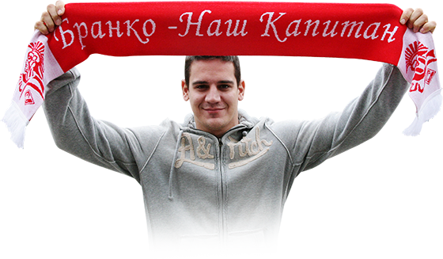
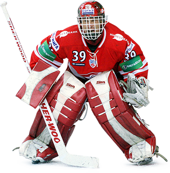

Авиакатастрофа в
Иркутске привела
также и «Спартак» к
финансовой
катастрофе
Сезон-2006/2007 «Спартак» пропускал. Так получилось. Вроде бы Игорь Шабдурасулов уступил свои активы в клубе бизнесмену Вадиму Мелькову, под которого в клуб должны были придти инвесторы. Но... Мельков оказался на борту самолёта А310 9 июля, потерпевшего крушение в аэропорту Иркутска. Команда, в составе которой были будущий известный тренер Андрей Разин и будущий генеральный менеджер «Адмирала» Ильдар Мухометов, была распущена. Остался только тренерский штаб под руководством будущего многократного триумфатора молодёжных чемпионатов мира Валерия Брагина и нападающий Михаил Иванов.
Сезон-2007/2008 команда начала плохо, и в декабре Брагина на посту главного тренера сменил Милош Ржига, с именем которого и было связано большинство событий этой пятилетки «Спартака». Банкиры, которые финансировали красно-белых, интуитивно приняли верное решение, пригласив чешского специалиста. В итоге «Спартак» занял в чемпионате 11 место, а в плей-офф уступил в упорной борьбе СКА из Санкт-Петербурга.
проблем выходила в плей-
офф
Милош Ржига
запомнился
эмоциями. При нём
«Спартак» начал
играть ярко и
агрессивно

Лидер команды и
любимец болельщиков
Бранко Радивоевич
Следующие два сезона получились самыми успешными в новейшей истории «Спартака». Команда Милоша Ржиги без проблем выходила в плей-офф и проходила в первом раунде таких сильных соперников, как СКА и московское «Динамо». Как итог — два седьмых места в Континентальной хоккейной лиге. Менеджмент «Спартака» в лице Андрея Яковенко, Николая Тищенко и Виктора Шалаева сделал ставку на словацких легионеров и не прогадал — Бранко Радивоевич, Штефан Ружичка и Иван Баранка стали лидерами красно-белых, позже к ним присоединились Мартин Цибак и Ярослав Обшут. Кстати, Радивоевич, Баранка и Цибак отлично сыграли за сборную на Олимпиаде в Ванкувере, выйдя в полуфинал турнира, в отличие от сборной России.

Именитый
Доминик Гашек
Сезон-2010/2011 ознаменовался приглашением суперзвезды мирового хоккея голкипера Доминика Гашека. И в то же время окончанием спартаковской эры Ржиги. Два чешских медведя не ужились в раздевалке «Сокольников». Камнем преткновения, как говорят, стало обсуждение выходов соперника «два в один». Тренер Ржига уверял, что защитнику нужно перекрывать передачу, а голкипер Гашек настаивал, что брать нужно человека с шайбой.
В итоге Ржига покинул «Спартак» и с мытищинским «Атлантом» вышел в финал Кубка Гагарина. А Гашек после новогоднего провала «Спартака» на Кубке Шпенглера выдал суперянварь, в котором красно-белые одержали 10 побед в 12 матчах и вышли в плей-офф. На счету Доминатора семь «сухих» матчей в том чемпионате. Особенно эпичной получилась игра в Хабаровске 29 января 2011 года. В день своего 46-летия Гашек отыграл на ноль, а «Спартак» обыграл «Амур» со счётом 7:0. В этот момент обязанности главного тренера исполнял генеральный менеджер Андрей Яковенко, после неудачных попыток Игоря Павлова заменить Ржигу на тренерском мостике. «Спартак» вышел в плей-офф, где уступил всё тому же СКА.